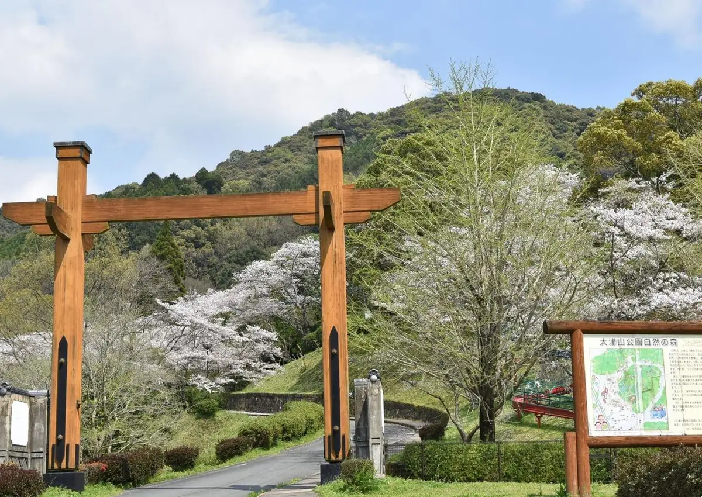
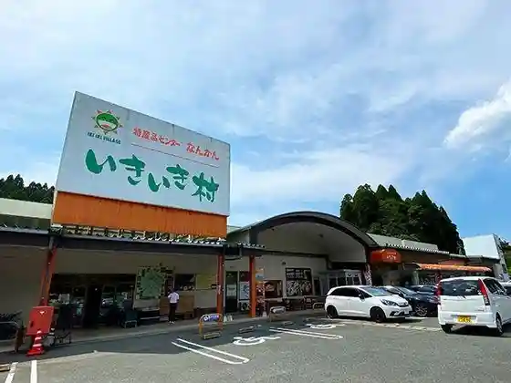
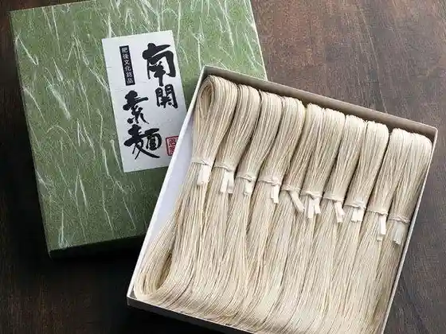
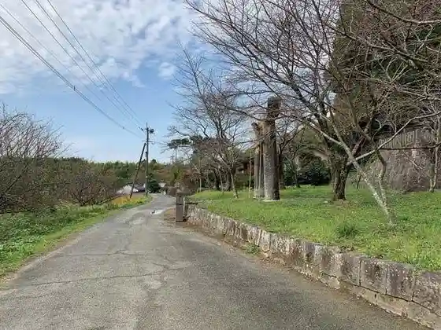

Japan / Kumamoto / Nankan
Nankan, Kumamoto
Nankan · Kumamoto
Nankan
Highlighted on the Kumamoto map.

Sights
Tokusanhin Center Nankan Ikiiki Village
Nankan, Kumamoto · 0968-53-0388 · Official / source link

Ueda Ya
Nankan, Kumamoto · 0968-53-0206 · Official / source link
Nankan Somen
Nankan, Kumamoto · Official / source link

Kanaguri Shi San Rodo
Nankan, Kumamoto · Official / source link

Otsuyama Park
Nankan, Kumamoto · Official / source link
Ko Shodai no Sato Park
Nankan, Kumamoto · 0968-53-1111 · Official / source link
Hotaru no Sato Park
Nankan, Kumamoto · 0968-53-1111 · Official / source link
Karin Village
Nankan, Kumamoto · 0968-53-8459 · Official / source link
Shodai Yaki Tai Taira Kama
Nankan, Kumamoto · 0968-53-9245 · Official / source link
Yamachikufakutorii (Haikei)
Nankan, Kumamoto · 0968-82-8818 · Official / source link
Buzen Kaido Nankan Ocha Ya Ato
Nankan, Kumamoto · 0968-57-8507 · Official / source link